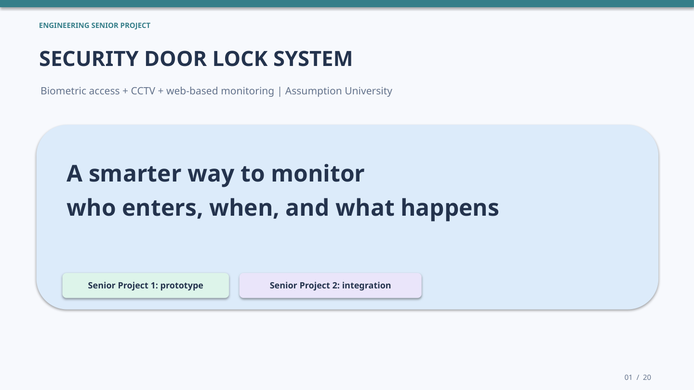
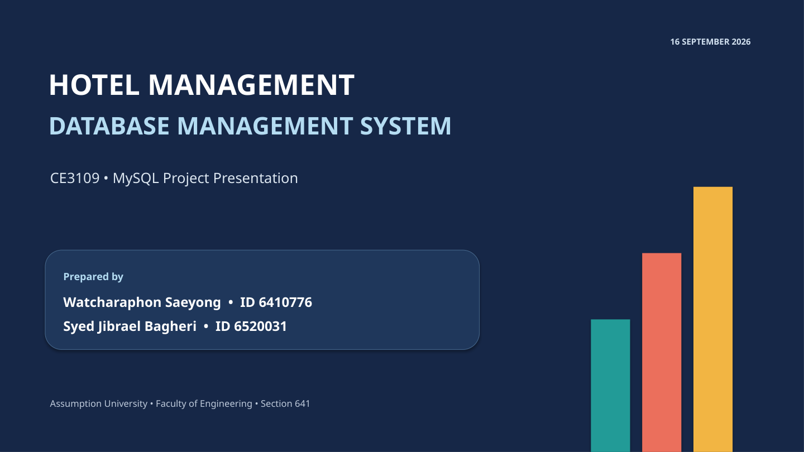
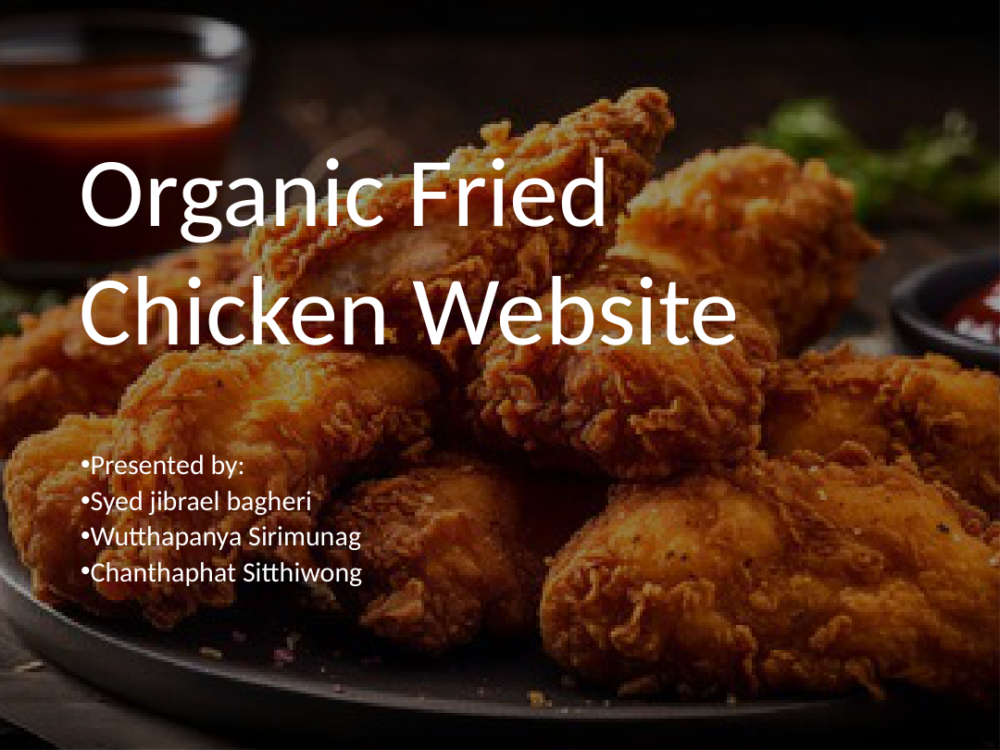

Technical presentation · 20 slides
Security Door System
Engineering concept, system architecture, implementation status and CCTV integration roadmap.
I'm a Computer & Network Engineering student creating AI-assisted presentations, organizing technical information, and building practical web and database projects. Open to international freelance projects with flexible deadlines.
University project presentations developed through AI-assisted drafting, detailed direction, content organization, editing and review. These examples demonstrate how I communicate technical and creative ideas.

Engineering concept, system architecture, implementation status and CCTV integration roadmap.

Relational database design, entity relationships and MySQL queries explained visually. Academic team project.

Website concept showcasing product pages, interface features, animations and visual design decisions. Academic team project.
Note: Presentations are academic examples, not commissioned client work. AI tools were used during drafting and production; final material was directed, reviewed and edited. Team contributions are acknowledged where applicable.
Project-based support suited to clear deliverables and agreed deadlines. Available primarily on weekends (Bangkok time, UTC+7).
Turn notes, reports or source material into organized, readable PowerPoint decks with clear flow and visual hierarchy.
Improve slide structure, simplify dense text, align formatting and refine existing presentations.
Organize supplied information, format Word documents and spreadsheets, and prepare technical or business summaries.
My academic work includes a security dashboard prototype, relational database design and a multi-page restaurant website. See the presentations above for explanations and visuals.
Frontend prototype for access records, user management and CCTV monitoring; hardware and backend integration remain planned.
MySQL team project covering 12 connected entities and demonstration queries.
Team project with product menu, cart interactions, contact page and responsive interface features.
I'm open to presentation, research, document-formatting and technical communication projects. Please share the scope, deadline and expected deliverables.
Weekend availability · Approximately 10–15 hours per week · Remote collaboration